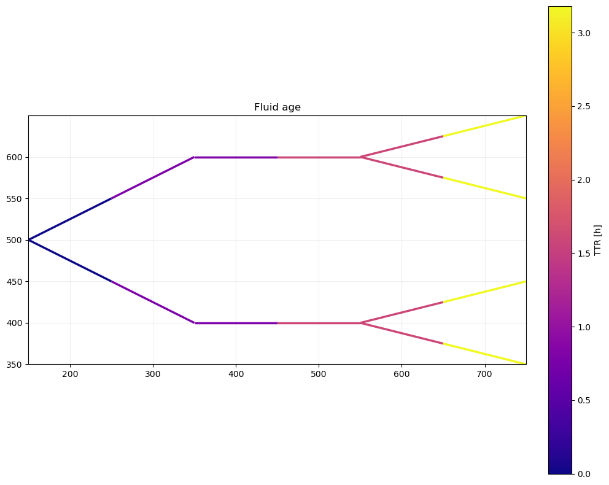

Example 7: Source Spectrum & Water age
This example demonstrates how GeoDataFrames (gdfs) and V3_dataframe created by PT3S can be used with matplotlib to create an interactive depiction of a source spectrum.
Example 7.1: Source Spectrum
PT3S Release
[94]:
#pip install PT3S -U --no-deps
Necessary packages for this Example
When running this example for the first time on your machine, please execute the cell below. Afterward, you may need to restart the kernel (using the ‘fast-forward’ button).
[1]:
#!pip install -q shapely ipywidgets
Imports
[2]:
import os
import logging
import pandas as pd
from pandas import Timestamp
import numpy as np
import matplotlib.pyplot as plt
import pandas as pd
import numpy as np
import matplotlib.pyplot as plt
import geopandas as gpd
from shapely.geometry import LineString, Point
from matplotlib.patches import Circle
import ipywidgets as widgets
from matplotlib.collections import LineCollection
from matplotlib.cm import get_cmap
import networkx
import re
from shapely.geometry import LineString
import networkx
from scipy.sparse import csc_matrix
#...
try:
from PT3S import dxAndMxHelperFcts
except:
import dxAndMxHelperFcts
try:
from PT3S import Rm
except:
import Rm
try:
from PT3S import ncd
except:
import ncd
#...
[3]:
import importlib
from importlib import resources
[4]:
#importlib.reload(ncd)
Logging
[5]:
logger = logging.getLogger()
if not logger.handlers:
logFileName = r"Example7.log"
loglevel = logging.DEBUG
logging.basicConfig(
filename=logFileName,
filemode='w',
level=loglevel,
format="%(asctime)s ; %(name)-60s ; %(levelname)-7s ; %(message)s"
)
fileHandler = logging.FileHandler(logFileName)
logger.addHandler(fileHandler)
consoleHandler = logging.StreamHandler()
consoleHandler.setFormatter(logging.Formatter("%(levelname)-7s ; %(message)s"))
consoleHandler.setLevel(logging.INFO)
logger.addHandler(consoleHandler)
Read Model and Results
[6]:
dbFilename="Example5"
dbFile = resources.files("PT3S").joinpath("Examples", f"{dbFilename}.db3")
[7]:
m=dxAndMxHelperFcts.readDxAndMx(dbFile=dbFile
,preventPklDump=True
,maxRecords=-1
,SirCalcExePath=r"C:\3S\SIR 3S\SirCalc-90-14-02-12_Potsdam.fix1_x64\SirCalc.exe"
)
INFO ; Dx.__init__: dbFile (abspath): c:\users\aUserName\3s\pt3s\PT3S\Examples\Example5.db3 exists readable ...
INFO ; PT3S.dxAndMxHelperFcts.readDxAndMx:
+..\PT3S\Examples\Example5.db3 is newer than
+..\PT3S\Examples\WDExample5\B1\V0\BZ1\M-1-0-1.1.MX1:
+SIR 3S' dbFile is newer than SIR 3S' mx1File
+in this case the results are maybe dated or (worse) incompatible to the model
INFO ; PT3S.dxAndMxHelperFcts.readDxAndMx: Model is being recalculated using C:\3S\SIR 3S\SirCalc-90-14-02-12_Potsdam.fix1_x64\SirCalc.exe
INFO ; Mx.setResultsToMxsFile: Mxs: ..\PT3S\Examples\WDExample5\B1\V0\BZ1\M-1-0-1.1.MXS reading ...
INFO ; dxWithMx.__init__: Example5: processing dx and mx ...
Preparing Data
[8]:
dfKNOT=m.gdf_KNOT
[9]:
dfROHR=m.gdf_ROHR
[10]:
# Get soure signatures for start and end knot
dfROHR['srcvector_fkKI'] = dfROHR['fkKI'].map(dfKNOT.set_index('tk')['srcvector'])
dfROHR['srcvector_fkKK'] = dfROHR['fkKK'].map(dfKNOT.set_index('tk')['srcvector'])
[11]:
QM=('STAT',
'ROHR~*~*~*~QMAV',
Timestamp('2025-09-23 22:00:00'),
Timestamp('2025-09-23 22:00:00'))
[12]:
dfROHR['srcvector_plot'] = np.where(dfROHR[QM] > 0, dfROHR['srcvector_fkKI'], dfROHR['srcvector_fkKK'])
[13]:
dfROHR = dfROHR[dfROHR['KVR'] != 2.0]
Plotting
[14]:
colors = [np.array([255, 0, 0]), np.array([0, 0, 255])]
DH Feeder
[15]:
pA=dfKNOT[dfKNOT['pk']=="5130118215602471518"]['geometry']
[16]:
pB=dfKNOT[dfKNOT['pk']=="5428490852894646653"]['geometry']
[17]:
src_A_coords = (pA.x, pA.y)
src_B_coords = (pB.x, pB.y)
[18]:
edge_colors = [c / 255.0 for c in colors]
Plot
[19]:
fig, ax = plt.subplots(figsize=Rm.DINA3q)
ncd.plot_src_spectrum(ax, dfROHR,'srcvector_plot', colors)
# Points
pts = np.array([src_A_coords, src_B_coords])
ax.scatter(pts[:, 0], pts[:, 1],
s=300, marker='*',
c=edge_colors,
edgecolors='white', linewidths=1.0,
zorder=10, label='Selected points')
plt.show()
xlim = ax.get_xlim()
ylim = ax.get_ylim()
canvas_center = ((xlim[0] + xlim[1]) / 2, (ylim[0] + ylim[1]) / 2)
fig.savefig('Example7_Output_1.pdf')

For each pipe a color (between A: red and B: blue) is mixed based on the srcvector present in its start and end node.
Plotting with Pie Charts
Preparing Data
[20]:
dfROHR['srcvector_plot'] = dfROHR['srcvector_plot'].apply(lambda x: tuple(x) if isinstance(x, list) else x)
[21]:
unique_values = dfROHR['srcvector_plot'].unique()
[22]:
df = pd.DataFrame({
'srcvector_plot': unique_values,
'geometry': [dfROHR[dfROHR['srcvector_plot'] == value]['geometry'].iloc[0] for value in unique_values]
})
[23]:
df[['left', 'right']] = pd.DataFrame(df['srcvector_plot'].tolist(), index=df.index)
df['left'] = df['left'].astype(int)
df['right'] = df['right'].astype(int)
[24]:
df['pos'] = df['geometry'].apply(lambda geom: geom.interpolate(0.5) if isinstance(geom, LineString) else None)
[25]:
def create_offset_point_away_from_midpoint(midpoint, canvas_center, scale=0.5):
if midpoint is not None:
# Calculate the direction vector from the canvas center to the midpoint
direction_vector = Point(midpoint.x - canvas_center[0], midpoint.y - canvas_center[1])
# Normalize the direction vector
magnitude = (direction_vector.x**2 + direction_vector.y**2)**0.5
normalized_vector = Point(direction_vector.x / magnitude, direction_vector.y / magnitude)
# Create a point away from the midpoint in the direction away from the canvas center
offset_point = Point(midpoint.x + normalized_vector.x * scale, midpoint.y + normalized_vector.y * scale)
return offset_point
return None
[26]:
df['offset_point'] = df['pos'].apply(lambda pos: create_offset_point_away_from_midpoint(pos, canvas_center, scale=3000))
[27]:
def create_circle_around_offset_point(offset_point, radius=1000):
if offset_point is not None:
return Point(offset_point.x, offset_point.y).buffer(radius)
return None
[28]:
df['circle'] = df['offset_point'].apply(lambda offset_point: create_circle_around_offset_point(offset_point, radius=1000))
[29]:
#df.head()
[30]:
df['helper_line'] = df.apply(lambda row: LineString([row['pos'], row['offset_point'].representative_point()]) if row['offset_point'] is not None else None, axis=1)
[31]:
df = df.sort_values(by='left', ascending=True)
Plot
[32]:
colors2=['red','blue']
[33]:
def plot_pie_charts_v2(ax, indexes, size=0.3, font_size=10, alpha=0.5):
for index in indexes:
if index < 0 or index >= len(df):
print(f"Index {index} out of range")
continue
x = df['left'].iloc[index]
y = df['right'].iloc[index]
pos = df['pos'].iloc[index]
x = int(x)
y = int(y)
circle = df['circle'].iloc[index]
helper_line = df['helper_line'].iloc[index]
if circle is not None:
# Get the centroid of the circle to place the pie chart
centroid = circle.centroid
# Place the pie chart at the centroid of the circle
inset_ax = ax.inset_axes([centroid.x, centroid.y, size, size], transform=ax.transData)
pie_wedges, texts, autotexts = inset_ax.pie([x, y], labels=[' ', ' '], autopct='%1.1f%%', colors=colors2, textprops={'fontsize': font_size})
# Set the alpha value for the pie chart wedges
for wedge in pie_wedges:
wedge.set_alpha(alpha)
# Plot the helper line from the midpoint to the pie chart
if helper_line is not None:
ax.plot(*helper_line.xy, 'k--', transform=ax.transData)
# Plot all offset points
offset_points = df['offset_point'].dropna()
ax.scatter([point.x for point in offset_points], [point.y for point in offset_points], color='red', label='Offset Points')
[34]:
def interactive_plot_2(**kwargs):
fig, ax = plt.subplots(figsize=Rm.DINA3q)
ncd.plot_src_spectrum(ax, dfROHR, 'srcvector_plot', colors)
for i in range(len(df)):
if kwargs.get(f'Index_{i}', False):
plot_pie_charts_v2(ax, [i], size=750)
plt.show()
[35]:
# Create checkboxes with proportions and index as descriptions
checkboxes_2 = {f'Index_{i}': widgets.Checkbox(value=False, description=f'{i}: {df["left"].iloc[i]}/{df["right"].iloc[i]}') for i in range(len(unique_values))}
[36]:
widgets_interact_2 = widgets.interactive(interactive_plot_2, **checkboxes_2)
[37]:
def update_plot_2(change):
plt.clf()
interactive_plot_2(**{key: checkboxes_2[key].value for key in checkboxes_2})
[38]:
for key in checkboxes_2:
checkboxes_2[key].observe(update_plot_2, names='value')
[39]:
display(widgets_interact_2)
The depiction of the interactive Widget plot does not work in the documentation, because a python kernel must run it. It is identical to the output plot apart from the possibilty to toggle a total of 20 pie charts individually. To interact with the plot, download and run the script.
Example 7.2 Water age
Read Model and Results
[60]:
dbFilename="Example7_2"
[61]:
dbFile = resources.files("PT3S").joinpath("Examples", f"{dbFilename}.db3")
[62]:
m=dxAndMxHelperFcts.readDxAndMx(dbFile=dbFile
,preventPklDump=True
,maxRecords=-1
,SirCalcExePath=r"C:\3S\SIR 3S\SirCalc-90-14-02-12_Potsdam.fix1_x64\SirCalc.exe"
)
INFO ; Dx.__init__: dbFile (abspath): c:\users\aUserName\3s\pt3s\PT3S\Examples\Example7_2.db3 exists readable ...
INFO ; Dx.__init__: SYSTEMKONFIG ID 3 not defined. Value(ID=3) is supposed to define the Model which is used in QGIS. Now QGISmodelXk is undefined ...
INFO ; PT3S.dxAndMxHelperFcts.readDxAndMx: QGISmodelXk not defined. Now the MX of 1st Model in VIEW_MODELLE is used ...
INFO ; PT3S.dxAndMxHelperFcts.readDxAndMx:
+..\PT3S\Examples\Example7_2.db3 is newer than
+..\PT3S\Examples\WDExample7_2\B1\V0\BZ1\M-1-0-1.1.MX1:
+SIR 3S' dbFile is newer than SIR 3S' mx1File
+in this case the results are maybe dated or (worse) incompatible to the model
INFO ; PT3S.dxAndMxHelperFcts.readDxAndMx: Model is being recalculated using C:\3S\SIR 3S\SirCalc-90-14-02-12_Potsdam.fix1_x64\SirCalc.exe
INFO ; Mx.setResultsToMxsFile: Mxs: ..\PT3S\Examples\WDExample7_2\B1\V0\BZ1\M-1-0-1.1.MXS reading ...
INFO ; dxWithMx.__init__: Example7_2: processing dx and mx ...
SIR 3S results
Preparing Data
[64]:
dfKNOT=m.V3_KNOT
[65]:
dfROHR=m.V3_ROHR
[66]:
# Build lookup Series from dfKNOT
lookup_TTR = dfKNOT.set_index('pk')['TTR']
lookup_XKOR = dfKNOT.set_index('pk')['XKOR']
lookup_YKOR = dfKNOT.set_index('pk')['YKOR']
[67]:
# Map fkKI and fkKK to TTR
dfROHR['TTR_KI'] = dfROHR['fkKI'].map(lookup_TTR)
dfROHR['TTR_KK'] = dfROHR['fkKK'].map(lookup_TTR)
[68]:
# Map fkKI and fkKK to XKOR
dfROHR['XKOR_KI'] = dfROHR['fkKI'].map(lookup_XKOR)
dfROHR['XKOR_KK'] = dfROHR['fkKK'].map(lookup_XKOR)
[69]:
# Map fkKI and fkKK to YKOR
dfROHR['YKOR_KI'] = dfROHR['fkKI'].map(lookup_YKOR)
dfROHR['YKOR_KK'] = dfROHR['fkKK'].map(lookup_YKOR)
[70]:
dfROHR.head(3)
[70]:
| pk | fkDE | rk | tk | fkKI | fkKK | fkDTRO_ROWD | fkLTGR | fkSTRASSE | L | ... | VAVAbs | PHRAbs | JVAbs | MAV | TTR_KI | TTR_KK | XKOR_KI | XKOR_KK | YKOR_KI | YKOR_KK | |
|---|---|---|---|---|---|---|---|---|---|---|---|---|---|---|---|---|---|---|---|---|---|
| 0 | 4762947358005495341 | 5639119000213664939 | 4762947358005495341 | 4762947358005495341 | 5136506604482101815 | 5174640379525019821 | 4986198312707850071 | 5502864303090671858 | -1 | 1000.0 | ... | 0.349311 | 0.028210 | 0.028210 | 55.583332 | 0.000000 | 0.795216 | 149.999857 | 349.999964 | 500.000119 | 600.000024 |
| 1 | 5652222422293607654 | 5639119000213664939 | 5652222422293607654 | 5652222422293607654 | 5665004361761998834 | 5174640379525019821 | 4986198312707850071 | 5502864303090671858 | -1 | 1000.0 | ... | 0.349311 | 0.028210 | 0.028210 | -55.583332 | 1.590431 | 0.795216 | 550.000072 | 349.999964 | 600.000024 | 600.000024 |
| 2 | 5479123649362439650 | 5639119000213664939 | 5479123649362439650 | 5479123649362439650 | 5665004361761998834 | 5185493728872360834 | 4986198312707850071 | 5502864303090671858 | -1 | 1000.0 | ... | 0.174656 | 0.007832 | 0.007832 | 27.791666 | 1.590431 | 3.180863 | 550.000072 | 749.999881 | 600.000024 | 649.999976 |
3 rows × 131 columns
Plotting
[80]:
def plot_rohr_ttr_halves(
dfROHR,
x_ki='XKOR_KI', y_ki='YKOR_KI',
x_kk='XKOR_KK', y_kk='YKOR_KK',
ttr_ki='TTR_KI', ttr_kk='TTR_KK',
cmap_name='viridis', lw=2.0, figsize=(10, 8),
equal_aspect=True, title='Fluid age',
cbar_label='TTR', use_percentiles=None # e.g. (2,98) to clip color scale
):
"""Draw KI→midpoint colored by TTR_KI, midpoint→KK colored by TTR_KK."""
# Helper: convert a column to float64 numpy array, coercing bad values to NaN
def to_f64(col):
return (pd.to_numeric(dfROHR[col], errors='coerce')
.astype('float64')
.to_numpy())
# --- Coerce inputs to numeric arrays ---
x0 = to_f64(x_ki); y0 = to_f64(y_ki)
x1 = to_f64(x_kk); y1 = to_f64(y_kk)
tki = to_f64(ttr_ki); tkk = to_f64(ttr_kk)
# Midpoints
xm = (x0 + x1) / 2.0
ym = (y0 + y1) / 2.0
# Valid masks
valid_coords = np.isfinite(x0) & np.isfinite(y0) & np.isfinite(x1) & np.isfinite(y1)
nonzero_len = np.hypot(x1 - x0, y1 - y0) > 0.0 # avoid zero-length segments
base_mask = valid_coords & nonzero_len & np.isfinite(xm) & np.isfinite(ym)
# Halves that can be colored
mask1 = base_mask & np.isfinite(tki)
mask2 = base_mask & np.isfinite(tkk)
# If nothing to plot, bail politely
if not (mask1.any() or mask2.any()):
fig, ax = plt.subplots(figsize=figsize)
ax.set_title(f"{title} (no valid segments)")
ax.set_aspect('equal', adjustable='box') if equal_aspect else None
return fig, ax
# Build segment arrays (n, 2, 2): [[x0,y0],[xm,ym]] and [[xm,ym],[x1,y1]]
seg1 = np.stack([np.column_stack([x0[mask1], y0[mask1]]),
np.column_stack([xm[mask1], ym[mask1]])], axis=1) if mask1.any() else np.empty((0,2,2))
seg2 = np.stack([np.column_stack([xm[mask2], ym[mask2]]),
np.column_stack([x1[mask2], y1[mask2]])], axis=1) if mask2.any() else np.empty((0,2,2))
# Colormap + normalization
cmap = get_cmap(cmap_name)
all_vals = np.concatenate([tki[np.isfinite(tki)], tkk[np.isfinite(tkk)]])
if all_vals.size == 0:
vmin, vmax = 0.0, 1.0
else:
if use_percentiles and len(use_percentiles) == 2:
lo, hi = np.nanpercentile(all_vals, use_percentiles)
vmin, vmax = float(lo), float(hi) if hi > lo else (float(all_vals.min()), float(all_vals.max()))
else:
vmin, vmax = float(np.nanmin(all_vals)), float(np.nanmax(all_vals))
if vmin == vmax:
# Avoid a zero-width color scale
vmin, vmax = vmin - 0.5, vmax + 0.5
norm = plt.Normalize(vmin=vmin, vmax=vmax)
# Plot
fig, ax = plt.subplots(figsize=figsize)
if seg1.shape[0]:
lc1 = LineCollection(seg1, cmap=cmap, norm=norm, linewidths=lw, zorder=2)
lc1.set_array(tki[mask1])
ax.add_collection(lc1)
if seg2.shape[0]:
lc2 = LineCollection(seg2, cmap=cmap, norm=norm, linewidths=lw, zorder=2)
lc2.set_array(tkk[mask2])
ax.add_collection(lc2)
# Limits
xs = np.concatenate([x0[valid_coords], x1[valid_coords]])
ys = np.concatenate([y0[valid_coords], y1[valid_coords]])
if xs.size and ys.size:
ax.set_xlim(xs.min(), xs.max())
ax.set_ylim(ys.min(), ys.max())
if equal_aspect:
ax.set_aspect('equal', adjustable='box')
ax.set_title(title)
# Shared colorbar
sm = plt.cm.ScalarMappable(cmap=cmap, norm=norm)
sm.set_array([])
cbar = fig.colorbar(sm, ax=ax, fraction=0.046, pad=0.04)
cbar.set_label(cbar_label)
ax.grid(True, alpha=0.2)
plt.tight_layout()
return fig, ax
[81]:
fig, ax = plot_rohr_ttr_halves(dfROHR,
x_ki='XKOR_KI', y_ki='YKOR_KI',
x_kk='XKOR_KK', y_kk='YKOR_KK',
ttr_ki='TTR_KI', ttr_kk='TTR_KK',
cmap_name='plasma', lw=2.5, cbar_label='TTR [h]')
#fig.savefig('ttr_halves.pdf', bbox_inches='tight')
plt.show()

Comparision: Travel Time Matrix
[73]:
TMAX_DETECT = 1.0e12
[74]:
def setup_graph(df_data_results_edges):
"""Setup graph from edges data and results.
Parameters
----------
df_data_results_edges: pandas.DataFrame
Edges data and results.
Returns
-------
G : networkx.Graph
Graph.
"""
# Nodes: index mapping (here via tk of nodes, alternatively via names of nodes)
list_nodes_tk = sorted(list(set(list(df_data_results_edges["tki"]) + list(df_data_results_edges["tkk"]))))
map_nodes_tk_ind = {list_nodes_tk[ii]: ii for ii in range(len(list_nodes_tk))}
# Adapt DataFrame
df_data_results_edges["indi"] = df_data_results_edges["tki"].apply(lambda x: map_nodes_tk_ind[x])
df_data_results_edges["indk"] = df_data_results_edges["tkk"].apply(lambda x: map_nodes_tk_ind[x])
df_data_results_edges["indi_new"] = df_data_results_edges[["indi", "indk"]].min(axis=1)
df_data_results_edges["indk_new"] = df_data_results_edges[["indi", "indk"]].max(axis=1)
df_data_results_edges["dt_new"] = np.sign(df_data_results_edges["indk"] - df_data_results_edges["indi"])*df_data_results_edges["dt"]
# Setup graph
G = networkx.Graph()
for _, row in df_data_results_edges.iterrows():
G.add_edge(
row['indi_new'], # Start node
row['indk_new'], # End node
# Additional edge attributes
dt=row['dt_new']
)
# Out
return G, map_nodes_tk_ind
[75]:
def bfs_observedNodes(G, source, tmax):
"""Breadth-first-search starting at source.
Parameters
----------
G : networkx.Graph
Graph.
source : int
Source node.
tmax : float
Maximum travel time.
"""
visited = set([source])
neighbors = G.neighbors
queue = deque([(source, neighbors(source))])
dt_travel_sum = {source: 0.0}
while queue:
parent, children = queue[0]
try:
child = next(children)
edge = (min(parent, child), max(parent, child))
sign_dt = np.sign(child - parent)
dt_travel = sign_dt*G[edge[0]][edge[1]]['dt']
dt_travel_sum[child] = dt_travel_sum[parent] + np.abs(dt_travel)
if ((child not in visited) and (dt_travel_sum[child] < tmax) and dt_travel < 0.0):
yield parent, child
visited.add(child)
queue.append((child, neighbors(child)))
except StopIteration:
queue.popleft()
[76]:
def setup_travelTimeMatrix(df_data_results_edges):
"""Setup travel time matrix from edges data and results.
Parameters
----------
df_data_results_edges: pandas.DataFrame
Edges data and results.
Returns
-------
TMat : numpy.ndarray
Travel time matrix.
map_nodes_tk_ind : dict
Mapping nodes tk to index.
"""
# Setup graph
G, map_nodes_tk_ind = setup_graph(df_data_results_edges)
# Find sets of observed nodes by bfs search and setup matrix V
obsNodes = {}
obsNodesL = {}
travelTimesAccObsNodesDict = {}
for iSens in G.nodes:
bfs_edges = list(bfs_observedNodes(G, iSens, TMAX_DETECT))
nodesSet = set()
endNodeLDict = {}
for (lli, llk) in bfs_edges:
nodesSet.add(lli)
nodesSet.add(llk)
edgex = (min(lli, llk), max(lli, llk))
endNodeLDict[llk] = G[edgex[0]][edgex[1]]['dt']
if (len(nodesSet) > 0):
obsNodes[iSens] = nodesSet - {iSens}
obsNodesL[iSens] = endNodeLDict
# Calculate travel time matrix data
edgesListUse = []
for edgex in bfs_edges:
(ix, kx) = edgex
ix_new, kx_new = min(ix, kx), max(ix, kx)
weight = abs(G[ix_new][kx_new]['dt'])
edgesListUse.append((ix_new, kx_new, weight))
Gtrav = networkx.Graph()
if (len(edgesListUse) > 0):
Gtrav.add_weighted_edges_from(edgesListUse)
travelTimesAccObsNodesDict[iSens] = networkx.single_source_dijkstra_path_length(
Gtrav, source=iSens, cutoff=None, weight='weight')
# Setup travel time matrix
rowsTTrav = []
columnsTTrav = []
dataTTrav = []
for iSens in obsNodes.keys():
# travel time from node to sensor
ttravs = travelTimesAccObsNodesDict[iSens]
for iObserved in ttravs:
rowsTTrav.append(iSens)
columnsTTrav.append(iObserved)
dataTTrav.append(ttravs[iObserved])
TMatSparse = csc_matrix((dataTTrav, (rowsTTrav, columnsTTrav)), shape=(len(G.nodes), len(G.nodes)))
# Trafo to dense matrices
TMat = 1.0*TMatSparse.toarray()
# Out
return TMat, map_nodes_tk_ind
[77]:
TMat, map_nodes_tk_ind = setup_travelTimeMatrix(df_edges)
---------------------------------------------------------------------------
NameError Traceback (most recent call last)
Cell In[77], line 1
----> 1 TMat, map_nodes_tk_ind = setup_travelTimeMatrix(df_edges)
NameError: name 'df_edges' is not defined
[ ]:
numpy.set_printoptions(linewidth=200)
TMat.round(1)